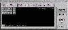
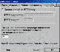
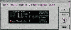

|
|
| 当前位置：电脑报电子版 > 1999 年 > 48 期 > 大众网络 > 浏览加速利器：Naviscope |
| 《 浏览加速利器：Naviscope 》 |
| 近日，在网上闲逛，无意间发现了一个好软件Naviscope，这里介绍出来和大家共享。 Naviscope是一个功能极为强大的网络浏览管理工具，该软件集成了几乎所有网络加速软件的优点，加速效果明显，提供的功能非常丰富，而且全部都是我们最需要的，让人一用就爱不释手，成为冲浪的必备利器。 一、Naviscope的主要特点 1具有Netsonic的智能网络浏览加速功能，灵活的预先下载网页关键字自定义和域名缓存功能，以及Win95/98的MTU/RWIN数值优化，可以有效地加快浏览速度。2类似WebTurbo的Site Mapper功能，可以实时建立站点树型目录图，使我们可以快速地切换到需要显示的深层网页，而不必一个个链接进入，大大地提高了浏览效率。 3浏览网页时，程序的浮动按钮工具条，以不同的颜色区分当前正在读取的文件。当把鼠标移动到相应的文件名上时，会显示该文件的大小、已读取的比例。单击正在读取的文件即可终止该文件的读取，这对于不想读取一些较大的图形文件特别有用。 4提供当前访问网站的诊断功能，可以查看HTTP文件头、获得当前站点的注册信息、查看网络链接情况、测试连接速度等。 5可以有选择地设置去除网页的Banner和弹出的广告窗口，过滤掉来自网页的背景音乐和图片、动态文字，拒绝Cookie、JavaScript等。 6抢占式连接功能可以增加网络繁忙时段的连接成功率。 7世界原子钟校准服务器可以校准系统时钟。 8日志功能可以让你了解浏览过的地方的一些相关资料。 二、Naviscope的安装设置及其使用 我们从网上下载Naviscope后，首先进行Setup，按照提示即可很容易地完成安装。桌面上就会出现Naviscope的主窗口(图1)。接下来的设置工作和使用也很简单。 图1  图2 1.主窗口左边的条状按键实际上是Naviscope的基本功能设置按钮，具体内容如下： 1）Website Tools：点击它以后，就会进入Web站点的设置窗口： 1运行sitemapper项你会看见好像Windows中的资源管理器一样的目录树，从它的上面可以知道你所浏览过的所有站点的详细原始资料，当达到足够多的树目录时，你可以清除它们后重新开始。 2点击Diagnostics项下的Prefetch setup后弹出一个包含了Naviscope一部分相当重要功能的窗口(见图2)： ●Proxy：在此项里，我们既可以设置代理服务器，也可以设置病毒防火墙，但是对于病毒防火墙，我们最好使用默认的端口值81。 ●Browsers：这一项实际上就是让你设置自己的默认浏览器。Naviscope支持IE和Netscape。 ●Prefetch：大家都知道，加快网页的浏览速度，采取预读是一个很不错的方法。这一项就是让我们进行网页预读。Naviscope非常厉害，它最多的时候可以同时支持25个页面进行预读，并且互不干扰。另外它的智能预下载功夫据说不会让你的电脑因为网路繁忙而引起阻塞。 ●Ad Blocking：这一项功能就是过滤网上广告。只要按照提示的内容进行选择，网页上的广告图片就没有了，仅仅留下了一个空空的广告位置。如果想对广告内容等分类过滤，你可以选取该面板下半部分的蓝色链接，设置好广告配置，你就可以过滤掉那些不需要的内容了。 ●Logging：这不过是Naviscope配给你的一个小秘书罢了。它可以忠实地记录下你冲浪时请求登录、网上浏览等各种活动。 ●MTU/RWIN：由于Win9X允许MTU（最大转移单元）和RWIN（接收窗口）的参数被优化，如果使用Win95默认的MTU/RWIN上网，可能发挥不了你电脑的潜力，因此，你最好选择优化过的参数值上网。 2）Toolbar：点击它以后，可以打开工具栏菜单，它被 Naviscope称为资源栏。当Naviscope运行的时候，在该栏上我们能清楚看到任务进程等内容。 3）Blocking：点击它以后，你会发现它实际上就是我们刚才看到的Ad Blocking项下半部分的蓝色链结内容。其中的Web Settings可以让你过滤掉背景、声音、Cookies、Javascript等，当然也就加快了网页浏览速度。 2.窗口上侧的标签按钮既包含了上述功能，同时也还有以下功能： 1）Status：点击它以后，Naviscope界面变成图3所示。它上面既包含了连接速率的指示器，又包含了在一定时间内过滤了多少个广告等内容。  2）Options：这也是Naviscope的重要功能所在。它包括： 1Cache DNS addresses：选取这一项后，它可以“记住”你访问过的域名，并且在24小时内需再次连接该网站时，可以跳过IP地址的查找，从而加快了网络的速度。 2Aggressive connections：选定此项，Naviscope会对你的连接每隔一定时间进行检测，如果没有反应，它会自动延长超时的时间，最大限度地保证你的连接。 3Show hints：选定该功能后，它会不断地向你提示一些比较容易的方法来学习Naviscope，它的内容还不断地会更新。为了能更好地掌握Naviscope，了解自己的网络状况，建议你最好还是把此项选上。 4Drag＆drop from browser：通过它可以从浏览器上拖下一个URL，还可以Ping到该网址的注册信息，并能预取这个URL。 3）Version：提供Naviscope的版本信息，并且还提供了升级的功能，只要连上它，你就可以获得Naviscope的最新版本。 4）Logging：记录冲浪时的活动。 5)About：介绍了Naviscope的一些企业信息。 3.主窗口右边的工具比较简单，setup项被点击后弹出的窗口实际就是图2所示的窗口；点击hide后，整个Naviscope窗口会缩成一个图标放置在任务栏中，保持了桌面的干净。Naviscope的下载地址：www.naviscope.com，最新版本为Naviscope822，515k大小。它可是“绿色”的啊，丝毫不会向你的电脑里安装.dll之类的内容，并且也不会修改任何系统文件。非常值得你一试。 (河南 刘锋)J |
| 下载本期推荐软件 | 页 首 |
| CPCW网站版权所有，电脑报网站编辑部设计制作发布 |
{kind=link}
{kind=link}
{kind=link}